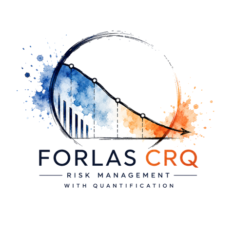
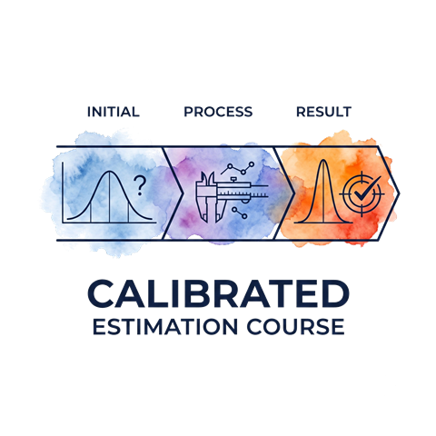
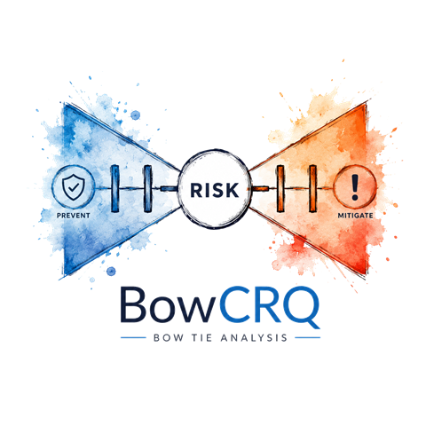

Cloud should be a choice
Adopt cloud services because they suit your needs, not because they're your only option.
Welcome
Cybersecurity shouldn't be exclusive. I believe everyone deserves access to practical, professional grade cybersecurity tools, training, and services, without prohibitive costs or the need for years of technical expertise. My goal is to bridge the gap between complex security practices and real-world usability, making cybersecurity accessible, understandable, and achievable for individuals and businesses alike.
Ethos
Adopt cloud services because they suit your needs, not because they're your only option.
Practical cybersecurity expertise should be accessible, understandable, and available to everyone.
Effective cybersecurity is built through practical, achievable steps, not unlimited budgets or specialist teams.
The best security solutions are the ones people can confidently use.
Everything runs on your machine: one executable, one database file you own. No cloud, no accounts, no telemetry.
Published in the open on GitHub: free to inspect, verify, and extend. Trust should never require faith.
Portfolio
Software for people who have to defend a number in front of a board. Free and open source.

A local-first quantitative cyber risk platform built on the FAIR methodology. Model loss scenarios, run Monte Carlo simulations, aggregate a whole portfolio, and produce boardroom-ready reports, all from a single desktop application with one database file that you own.

Self-contained, offline HTML tools that train subject matter experts to give calibrated probability estimates before their inputs reach a quantitative risk model. Based on the estimation training method popularised by Douglas Hubbard: repeated testing with immediate feedback until stated confidence matches actual accuracy.

A local-first desktop application for quantified Bow Tie risk analysis with Cyber Risk Quantification (CRQ).
Contact
Questions about the tools or beta feedback: all welcome.